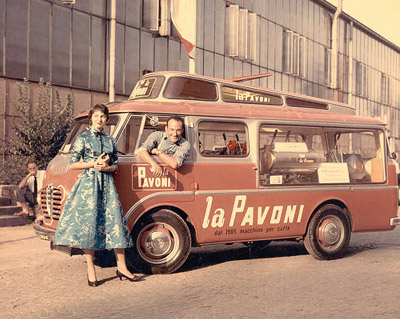
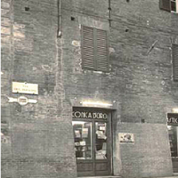

Guido Nannini proveniva da Castagnoli, presso Gaiole in Chianti, dove era nato nel 1886 e quando, appena sedicenne, iniziò a percepire in sé la vocazione per il commercio, con ambiziosa lungimiranza acquistò una bicicletta e, fissatovi un contenitore a cassetti, cominciò a farsi presente ai mercati del circondario senese per la vendita di merceria per cucito e ricamo insieme ad altri generi come i lacci per le scarpe, un genere questo di articoli allora poco reperibili al di fuori dei negozi della città, ma necessari ed apprezzati alle allora numerose persone che, come si usava normalmente, provvedevano autonomamente alla confezione casalinga dell’abbigliamento familiare.
La sua intraprendenza, dopo averlo condotto a lavorare come cameriere a Carrara, lo indusse a raggiungere Genova, città già evoluta e piena di occasioni per accrescere le conoscenze dei sistemi di commercio, messe a frutto con la gestione personale di una pasticceria nella vicina Chiavari ed con fecondi contatti con realtà milanesi.
Tornato a Siena arricchito da tali esperienze, fu certo facilitato nell’ottenere sollecitamente la direzione della Pasticceria Mosca, in via Trieste (l’attuale Banchi di Sopra) ed in seguito quella del Caffè Greco, davanti al cosiddetto Casin de’ Nobili, celebrato e storico luogo di ritrovo e “sfoggio” di tanti senesi.
La fausta e, si vuole, casuale conoscenza di turisti in visita a Siena provenienti dal Brasile fu per Guido Nannini l’occasione per acquisire particolari allora poco noti riguardo ai sistemi di lavorazione del caffè e gli fu, così, naturale conseguenza divenire tenutario nella zona senese delle tecniche più aggiornate per lo svolgimento di tale attività.
Mai inoperoso, in Via Garibaldi lo si poteva trovare al banco di un “appalto”, per l’epoca già importante e impegnativo negozio per la vendita di tabacchi e generi di monopolio… quando, superati da poco i vent’anni, venne a sapere dell’esistenza, a Milano, di una modesta officina specializzata nella fabbricazione di macchine per il caffè funzionanti a vapore, la “Desiderio Pavoni”.

Non esitò ad acquistarne una ed estendendo l’attività della tabaccheria anche a quella di bar fu il primo in tutta Siena a poter vantare la somministrazione di una bevanda gradevolissima e certo ben diversa dal caffè ottenuto dalle ormai superate caffettiere per semplice infusione in acqua calda.
Per la bontà finora sconosciuta del suo caffè il bar, cui fu dato il nome di “Ideale”, prese subito ad essere frequentatissimo dai senesi… finchè nel 1919 Guido, ormai conosciuto e con intelligente ambizione, riuscì ad aprire nella odierna Piazza Matteotti (allora intitolata ad Umberto I) un locale di bar con generi alimentari la cui altra novità fu la diretta torrefazione del caffè e, complice la capacità dei locali, non esitò, lasciato l’esercizio di via Garibaldi, ad aggiungere nel 1922 l’attività di “fiaschetteria”, un commercio qualificato e mescita di vini.

(cliccare sulla foto per ingrandirla)
L’anno 1930 in un locale adiacente di via del Paradiso avviò un’attività di fabbricazione di liquori e di pasticceria, ma un altro obiettivo attendeva di essere raggiunto da Guido Nannini che, venuto a conoscenza delle difficoltà di un commerciante, ne rilevò prontamente un’attività non lontana da Piazza del Campo ed una vistosa insegna al neon iniziò a propagarne tra i senesi ed i visitatori la denominazione di ”Conca d’Oro”.

La conquista del centro di Siena ebbe infine seguito con l’acquisto di un altro negozio di pizzicheria e vini posto nella parallela via dei Termini.
Dal 1944 i figli Aldo e successivamente l’intraprendente Danilo (ideatore della produzione su larga scala di dolci tipici senesi la cui bontà, dal 1948 in poi, tanto avrebbe giovato ad espandere la notorietà del marchio Nannini) ebbero il compito di recare verso il futuro l’affascinante avventura iniziata da Guido Nannini che il 19 Gennaio, nell’Inverno ricordato freddissimo del 1963, avrebbe lasciato Siena.


(cliccare sulla cartoline per ingrandirle)

 ACCADDE OGGI
ACCADDE OGGI